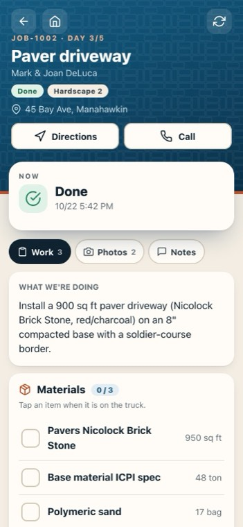
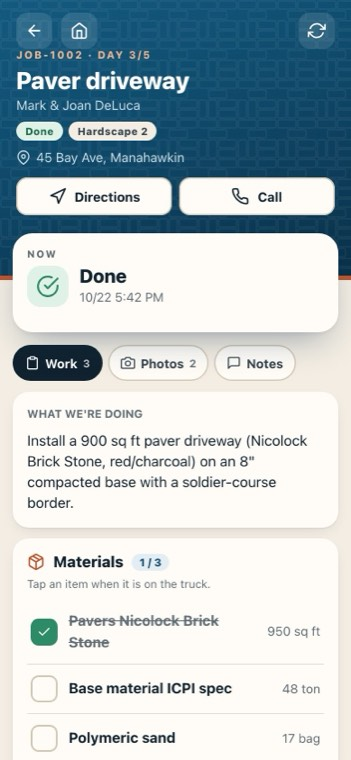
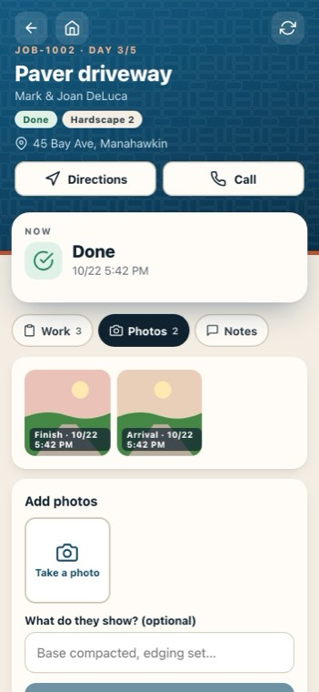
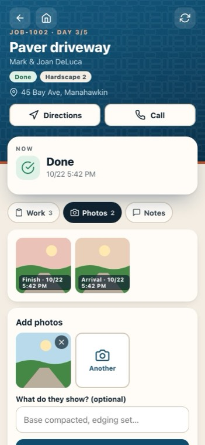
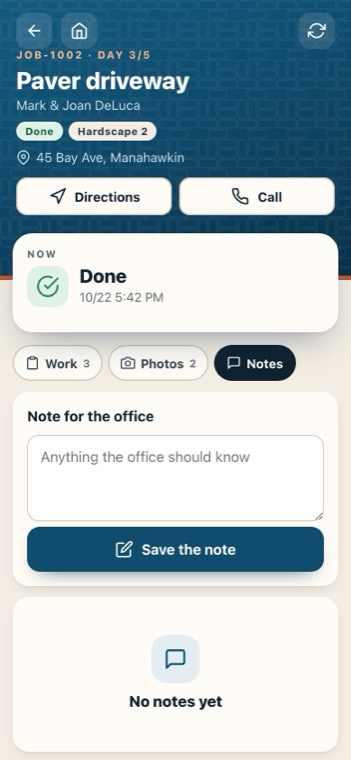
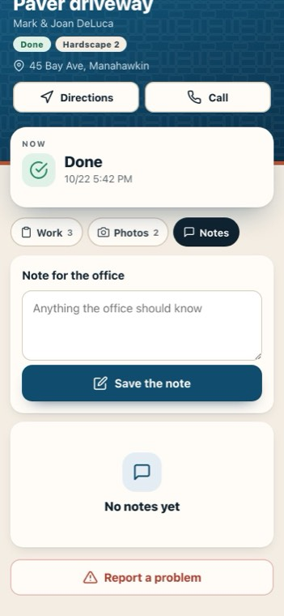
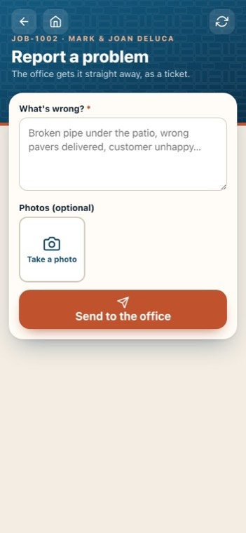

A job on the phone: materials, photos, notes, problems
On the crew phone app: Jersey Shore Pavers — Crew.
▶ Also in the complete walkthrough: chapter 21, The crew phone app, at 2:44:08-
 1
1The job
The job number, the day of the job, the customer and the address, with Directions and Call.
-
 2
2Directions
Opens maps with the address. Call rings the customer.
-
 3
3What we're doing
The work, in the office's words, and any note for the crew. No prices: the crew phone never shows money.
-

4Materials to load
Tap each item when it's on the truck. The office sees what was loaded.
-

5Photos
The arrival and finish photos, and any you add.
-

6Add photos
Take as many as you need, add what they show, and save.
-

7Notes
A note for the office: it shows on the job in the office straight away.
-

8Write a note
Type it, then Save the note.
-

9Report a problem
A broken pipe, the wrong pavers, an unhappy customer: it becomes an office ticket, with photos.
-

10What's wrong
Say what's wrong, add photos if they help, and send it to the office.